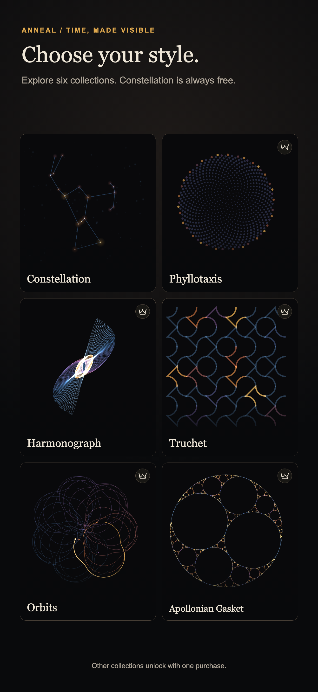
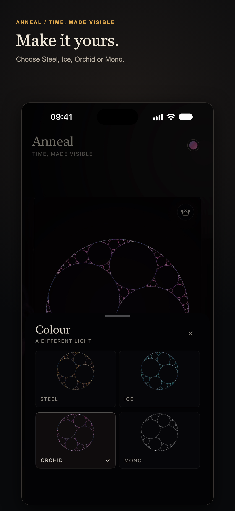
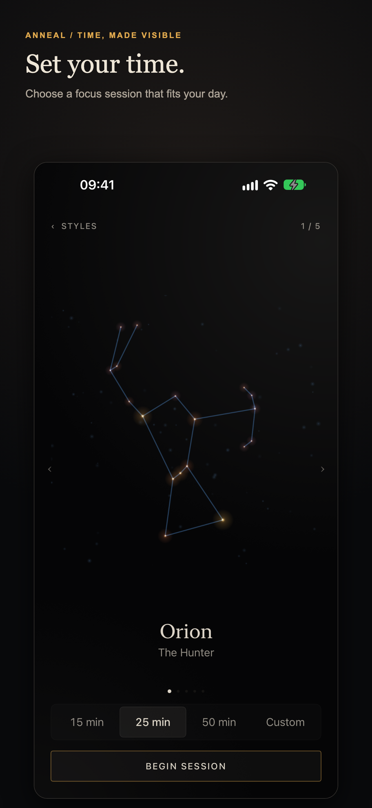
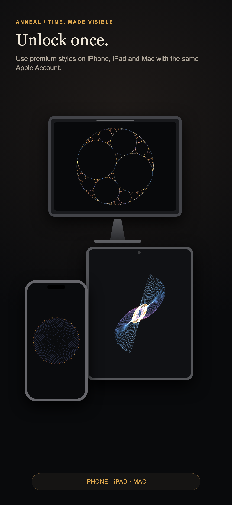

An invitation to focus
Time,
made visible.
A little space to concentrate.
Something beautiful taking shape.
A ritual, made yours
Choose. Settle.
Begin.
Pick a pattern that feels like you. Find your colours. Give yourself time. Anneal takes care of the unfolding.

Find your rhythm.
Six styles. Twenty-five variants. A different way to see the time you give yourself.

A different light.
Steel, Ice, Orchid and Mono. Four palettes to meet your mood.

Make room for focus.
Fifteen minutes or a little longer. Choose a preset or set your own duration.
Let the moment unfold
You do the focusing.
Time does the drawing.
No scores to chase. No feed to follow. Just your session, and an artwork forming with you.

Your space, your screen
A quiet companion.
Wherever you focus.
Made for iPhone, iPad and Mac. A small ritual at your desk, or a moment of focus somewhere new.
Start free with every Constellation variant and all four palettes. An optional one time Premium purchase opens the remaining collection.
No ads. No subscription. No Anneal account.
Here to help
Anneal Support
Questions, feedback or a problem with Anneal? Contact Karun Sud. Include your device model, operating system version, Anneal version and a description of what happened.
Restore Premium
Use the same Apple Account used for the original purchase. Open a locked style, then choose Restore Purchases. If it does not restore, contact support with the details above.
Purchases and refunds
Apple processes in-app purchases. For a refund request, visit Apple’s Report a Problem. Please do not send passwords or payment-card details to support.
Locking your screen
Locking your device does not pause the timer. When you return, Anneal shows the session’s current progress. Live Activities can show the countdown on supported iPhone and iPad Lock Screens when enabled.
Your time stays yours
Privacy Policy
Effective 24 November 2026 · Developer: Karun Sud
Information in the app
Anneal does not collect or transmit your session information or artwork preferences to the developer. Anneal has no advertising, analytics or tracking SDKs and requires no Anneal account.
Local storage
Your preferences and active-session information are stored on your device. Anneal does not provide its own cloud service to synchronize running sessions. You can remove local app data by deleting the app and its data through your device’s settings. System backups are managed separately by you and Apple.
Purchases
Apple processes optional in-app purchases. Anneal uses Apple’s StoreKit services to check purchase status and provide access to Premium. The developer does not receive your payment-card information. Apple’s services are subject to Apple’s privacy policy.
Notifications and Live Activities
If enabled, notifications and Live Activities display session information through Apple’s system services. You can manage these permissions in your device settings.
Support correspondence
If you email support, your email address and the information you send are used to respond to your request. Please avoid sending sensitive information. You can contact us to request deletion of support correspondence, subject to any applicable retention obligations.
This website
This website uses GitHub Pages. We add no analytics or tracking cookies. GitHub may process technical information such as IP addresses to operate and secure its hosting service. See GitHub’s privacy statement.
Changes and contact
This policy may be updated when Anneal’s features or practices change. The effective date above will be updated. For privacy questions, contact Email Support.